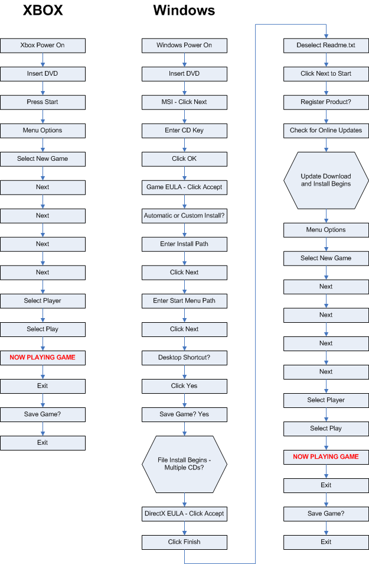
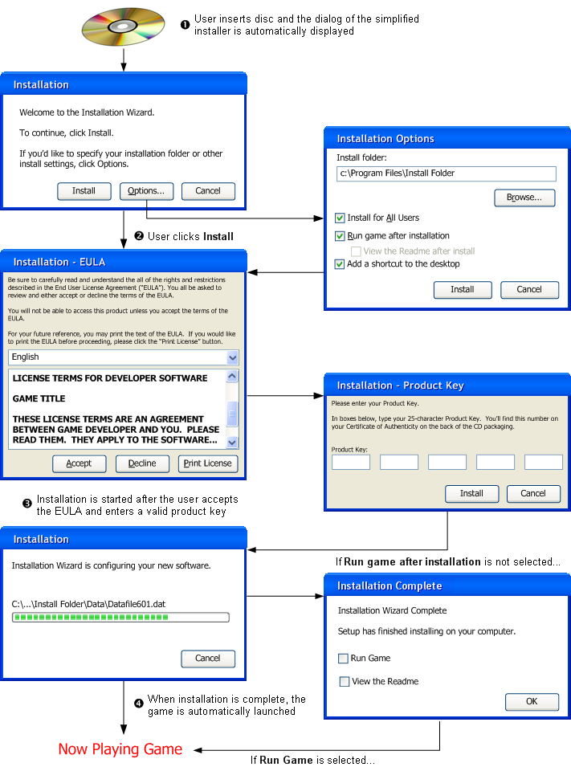

One major advantage of games that run on a console instead of on Windows is the installation process — or the lack thereof. When a game is first run on a console, the player makes a few choices or confirmations and is able to start playing almost immediately. Installing a game on Windows is more complicated, by comparison, by its need for substantial user input and its potentially long installation process. However this installation process can be improved to provide a better experience for players of Windows-based games. This article outlines some concepts that developers of games for Windows can and should implement to improve the overall experience.
When comparing the ease of installation and the amount of time required to begin playing a game, the typical Xbox experience is much better than Windows. The flow chart in Figure 1 shows the typical installation processes on Xbox and on Windows, for comparison.
Figure 1. Typical Installation Process, Xbox vs. Windows

However, the greater requirements placed on the user to install a game on Windows does not need to be. By implementing the following concepts, you will decrease the number of steps a user must complete, which can shorten the amount of time needed for installation.
All of the choices that the gamer selects during installation that might cause installation to abort should be offered before those that won't stop the installation; the worst-case scenario is for the gamer to be offered a choice that could cause installation to abort after the game has been completely copied from the installation media. This can be especially frustrating if the installation requires swapping of multiple disks to complete. You should design your installer to ask all important questions (such as acceptance of the EULA) at the beginning of the process, so that the installation doesn't need to be rolled back at or near its completion.
You could also prompt the user to accept the EULA and to enter the product key when the game starts for the first time, rather than asking for these as part of installation. In this scenario, refusing to accept the EULA or cancelling during entry of the product key won't roll back the installation, because these prompts are part of the game itself. This might be useful if you have preinstalled or OEM scenarios. However, take care not to prompt the user to make choices during initial startup that require administrative credentials.
Ideally, Windows game installers should only offer completely automatic and custom modes of installation and nothing in between.
The automatic mode should not ask any more questions than absolutely necessary to create a functioning installation, and simply use default settings without prompting for other options. Many gamers don't care about the location of the game on the hard drive or the initial game settings — they just want to play the game as soon as possible.
The custom mode should only be for power users who need or want to change the installation path or other installation options, and it should not be the default mode.
The custom mode can offer the choice of either a full installation or of a minimum installation that installs only the files necessary to play the game. If the gamer chooses minimum installation, the game can use install-on-demand or streaming techniques to read the remaining installation data, which allows the gamer to begin playing the game quickly without having to wait for a full installation to complete. However, installing data in this manner has an impact on the design of the game engine. For more information about installing content on demand, see Install-on-Demand for Games.
In both installation modes, you should try to limit the number of times that you prompt the gamer during installation. This will reduce the amount of reading required to get the game installed and running. If necessary, there should only be one follow up prompt after the installation is finished. As you can see, the example shown in Figure 1 has too many post-installation prompts.
Make the installation of all components required rather than making any of them optional, unless there is a good reason to do otherwise. Simply installing all of the components will make the game start without further delay and fuss.
It is strongly recommended that the game silently install the DirectX redistributable that the game was built against. The DirectX installation process is designed so that it verifies whether anything needs to be updated and quickly returns if it doesn't. So, there is no need to ask users if they want DirectX installed. A silent installation of DirectX can be done by running this command from your installation package: dxsetup.exe /silent
Asking a user if he wants to install DirectX can cause many problems. For example, if the user assumes he has the latest redistributable installed and chooses to skip installation of DirectX; installation of the game could continue successfully anyway. However, if the game requires a specific version of D3DX, or other updated functionality that was skipped, then the game won't work, and the user will be very frustrated.
If for some reason you must ask the user if he wants to install DirectX, your installer should — at least — abort and roll back the entire installation process if the user chooses not to install DirectX. Rolling back the installation will avoid any errors caused by the system not having the latest version of DirectX installed when the game launches.
Note that it is important to ship the redistributable that your game was built against instead of simply shipping the redistributable from the latest DirectX SDK. The latest redistributable might not contain all of the components found in a previous version.
It is also important to have the installer check to see what is already installed and determine whether rebooting the system is necessary. If DirectX is up to date, the copying of one DLL shouldn't require rebooting.
The DirectX EULA can and should be appended to the game developer's EULA. There is no point in allowing the user to agree to the developer's EULA and not the DirectX EULA. Either the user must agree to both EULAs or not install the game. If a developer feels she must offer the user the choice, the whole installation should fail if the user chooses not to agree to the DirectX EULA.
If possible, consult with your legal department to see if you can avoid EULAs altogether, and use a shrink-wrapped EULA like console games use. This will avoid needing to ask users if they want to accept the EULA. The DirectX EULA needs to be appended to the shrink-wrapped EULA; otherwise, the DirectX EULA must be displayed and accepted which defeats the purpose of using a shrink-wrapped EULA.
One exception to a shrink-wrapped EULA is for a content editor. Any editor needs to display a EULA during the editor's installation or when the editor is started for the first time. Many gamers are only interested in playing and not in making content, so the installation of an editor should be a separate process.
Almost all gamers want to play a game as soon as they receive it. By default, the installer should launch the game after finishing the installation, although it is good practice, in a custom installation, to specify this in a check box that the user may override.
Developers should be testing their installations to determine how much time is required for installation. Developers can decrease installation time by using the latest version of their installation tools and by optimizing the data layout on the installation media. Most DVD authoring tools have options for layout optimization that can improve installation times without increasing development workload.
If your game can run as a server or the game networking model is peer-to-peer, register your game with Windows firewall at installation time. This will prevent the firewall dialog from popping up in the middle of the game when they user tries to access the network. If the game is a pure client, then the installer shouldn't add the game to the firewall's exceptions list.
For more information see, Windows Firewall for Game Developers.
Simply default to installing the game for all users. This will allow any new user on the system to play the game without having to install it for them. If installation for all users is attempted on a Least-Privileged User Account, the installer will either fail or prompt the user for an administrator password. So, try to detect if the account has proper privileges before offering the option to install for all users. If the user does choose to install the game for the current user only, be sure to change the installation path to a location within the user's profile. Ideally, change the path to somewhere in non-roaming application data (for example, a subdirectory of CSIDL_LOCAL_APPDATA).
Following in Figure 2 is an example of an improved process for installing a game in Windows, with simplified installation dialogs.
Figure 2. Simplified Installation Process

The following are important points of note:
Gamers want to be playing a game as soon as possible. The last thing that a gamer wants to be doing is wading through dialogs and making choices that are the same as for all of the other games that he or she has installed. Implementing these ideas can shorten the amount time that a gamer spends installing a game on Windows and help improve the overall quality of the Windows gaming experience.
Â
Â